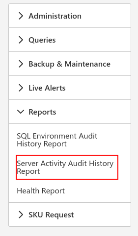
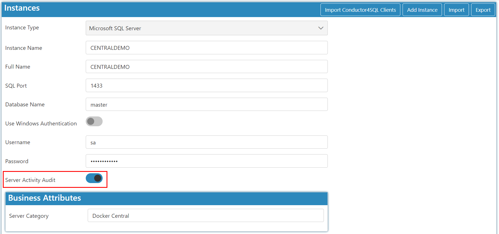
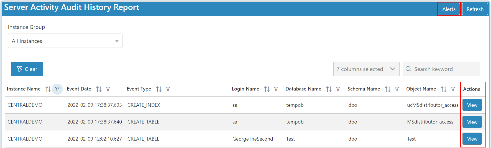
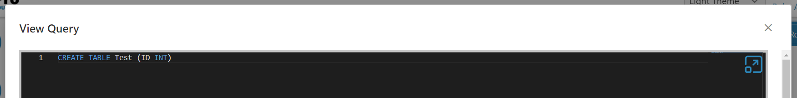
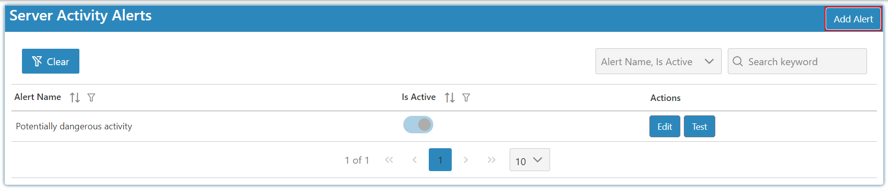
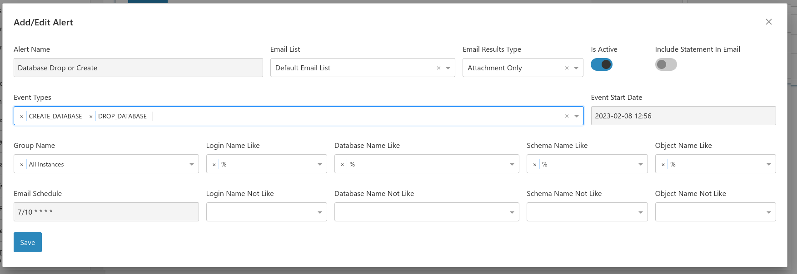

Introduction
To get started select the reports icon and choose audit history report:

Here you can see database structural changes made on your whole environment. This allows you to see if logins, databases, tables, views, indexes etc are being added, modified or removed from your servers. You can also set up email alerts for potentially dangerous operations such as login creation or dropping databases.
Note
Server activity audit is an option that can be set by editing the instance you would like to audit. This feature is only available for Microsoft SQL Server and not SQL Azure or another of the other database types.


And by viewing a script you can see what statements users have run in SQL.

Note
If the script returns --Encrypted-- then the changes were done by an encrypted stored procedure and you cannot view the SQL that was changed.
Alerts
By clicking the add alerts button you can create alerts for changes being made in a certain database or certain changes being made that you would like flagged and sent via email as an alert.

